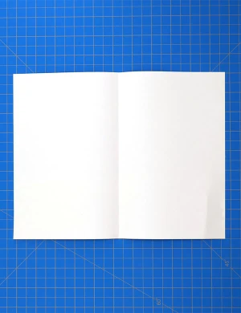
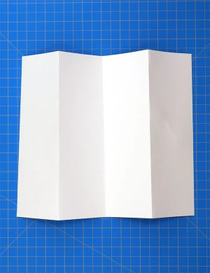
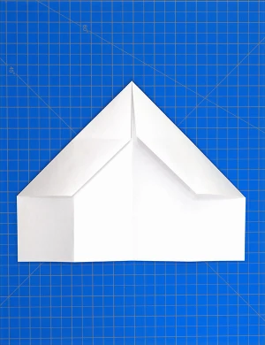
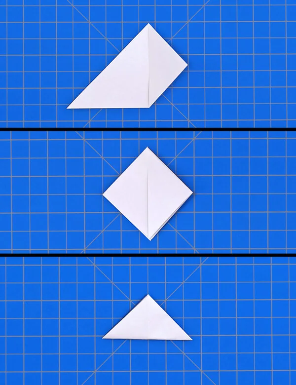
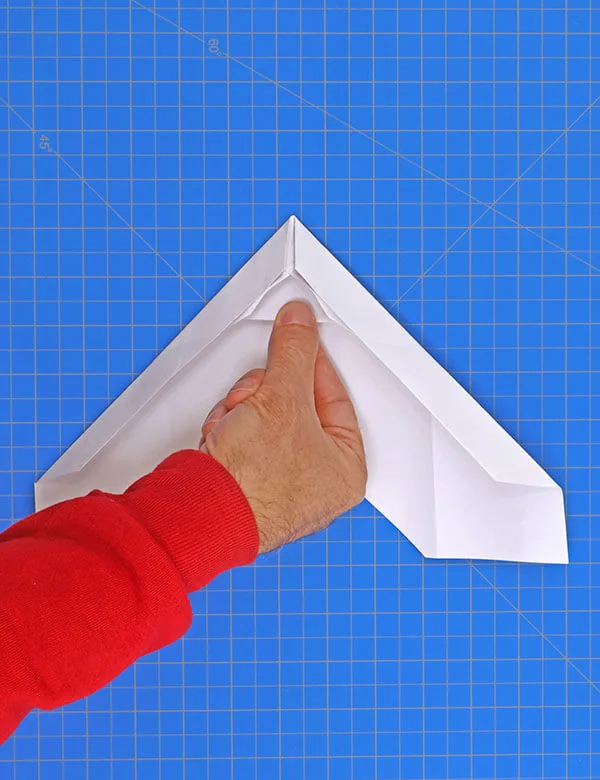
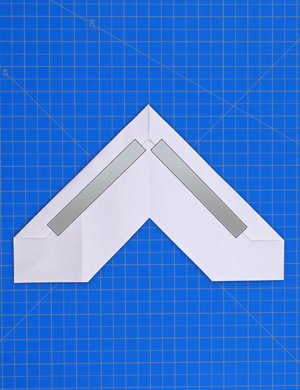

1Step 1
Hold the sheet with the long edge toward you, then crease it left-to-right in half.
Hangar figures for this design — distance in metres, hang time in seconds, and rank among scored planes — before you fold.
| Metric | Measured result | Hangar rank |
|---|---|---|
| Distance | Not scored for distance | — |
| Hang time | Not scored for hang time | — |
Test conditions (same for every design we score): 70–80 gsm Letter or A4 printer paper; standing release at about 1.6 m shoulder height; calm indoor air (no wind); each thrower gets 10 attempts and we keep their best throw. Ranks compare only designs that cleared the scoring threshold under this protocol.

Hold the sheet with the long edge toward you, then crease it left-to-right in half.

Then fold left and right edges into that middle crease and open them again.

Fold both top corners down to the outer creases to form two triangles.

Fold the top edges into the centre crease, then open them.

Bring left and right sides in to the crease from the previous step.

Press the step-4 crease closed again.

Fold the tip of the airplane down so the point matches up with the corners that meet in the middle as shown in the guide.

Fold the left and right sides over again so the top edges meet at the center crease as shown in the guide.

Fold the airplane in half and measure 6.3cm (2.5in) in from both the bottom and back side. Connect the measurements and draw a diagonal line as shown in the guide.

Cut along the diagonal line. Save the triangle piece as shown in the guide.

Fold the tips of the triangle piece up to the center to make a square. Then fold that in half to make a small triangle as shown in the guide.

This small triangle should be inserted into the tip of the airplane to add the necessary nose weight. You can also tape it to the back side of the tip if you prefer as shown in the guide.

Use plenty of tape to stick down the entire length of both sides of the wing so it lays flat as shown in the guide.

Fold up the wingtips on either side as shown in the guide.
The Wide-Wing Cruiser is not scored for distance in this hangar — it is not built for range. See the measured results table above the folding steps for metres, hangar rank, and the fixed protocol (70–80 gsm paper, ~1.6 m shoulder-height release, calm air, best of 10 throws per person).
The Wide-Wing Cruiser is not scored for hang time here — the design is not aimed at time aloft. See the measured results table above the folding steps for metres, hangar rank, and the fixed protocol (70–80 gsm paper, ~1.6 m shoulder-height release, calm air, best of 10 throws per person).
It is best for long floating glides. Folding skill is beginner. Use Letter & A4, 14 steps, needs a cut.
Launch gently at a slight upward angle, ideally from a high spot, and let it settle into a glide instead of throwing it hard.